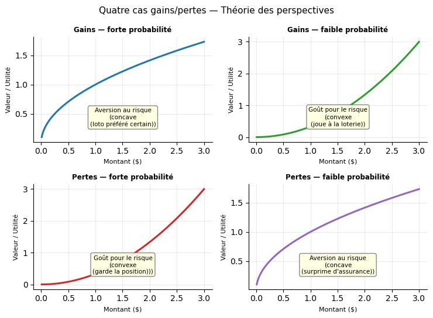

Chapitre 14 — Choix en univers risqué
Question du chapitre
Comment un individu compare-t-il des gains certains et des gains aléatoires ?
Idée à comprendre d’abord
En univers risqué, il ne suffit plus de regarder l’espérance monétaire. Il faut regarder l’espérance d’utilité — et distinguer \(U(E[X])\) de \(E[U(X)]\).
14.1. Loterie et espérance
Une loterie est un vecteur de gains et de probabilités :
\[ L=(x_1,p_1;\ x_2,p_2;\ \dots;\ x_n,p_n), \quad \sum_i p_i=1 \]
Son espérance mathématique est \(E[X]=\sum_i p_i x_i\).
14.2. Espérance d’utilité
Dans le cadre de von Neumann-Morgenstern, l’individu maximise :
\[ E[U(X)]=\sum_i p_i U(x_i) \]
Point essentiel : \(U(E[X]) \neq E[U(X)]\) en général. C’est cet écart qui fonde la théorie du risque.
La forme de la fonction d’utilité détermine l’attitude face au risque :
| Courbure de \(U\) | \(U''\) | Attitude | Relation |
|---|---|---|---|
| Concave | \(< 0\) | Aversion au risque | \(U(E[X]) > E[U(X)]\) |
| Linéaire | \(= 0\) | Neutralité au risque | \(U(E[X]) = E[U(X)]\) |
| Convexe | \(> 0\) | Goût pour le risque | \(U(E[X]) < E[U(X)]\) |
14.3. Aversion au risque
Si la fonction d’utilité est concave (\(U''(x)<0\)), l’inégalité de Jensen donne :
\[ U(E[X]) \geq E[U(X)] \]
L’individu préfère donc recevoir l’espérance de façon certaine plutôt que jouer la loterie de même espérance.
14.4. Équivalent certain et prime de risque
L’équivalent certain \(CE\) est défini par :
\[ U(CE)=E[U(X)] \]
Pour un individu averse au risque : \(CE < E[X]\) — la prime de risque est \(\pi = E[X] - CE > 0\).
Pour un individu amateur de risque (utilité convexe) : \(CE > E[X]\) — il accepterait de payer pour jouer la loterie.
14.5. Assurance
Un individu averse au risque est prêt à payer \(\pi\) pour substituer une dépense certaine à une perte aléatoire de même espérance. L’assurance est donc rationnelle dès lors que la prime proposée ne dépasse pas \(\pi\).
14.6. Limites du modèle
Le modèle d’espérance d’utilité est central, mais il ne rend pas compte de tous les comportements observés :
- surestimation des petites probabilités ;
- asymétrie gains/pertes (théorie des perspectives) ;
- paradoxes d’Allais ou d’Ellsberg ;
- effets de cadrage.
14.7. Théorie des perspectives (Kahneman et Tversky, 1979)
La théorie des perspectives propose une alternative descriptive au modèle d’espérance d’utilité. Elle repose sur trois mécanismes :
Point de référence. L’individu évalue les gains et les pertes par rapport à un point de référence (souvent le statu quo), et non en niveaux absolus de richesse.
Aversion aux pertes. La souffrance ressentie pour une perte d’un montant donné est plus forte que la satisfaction pour un gain équivalent. Formellement : \(|v(-x)| > |v(x)|\), avec un coefficient d’aversion aux pertes \(\lambda \approx 2{,}25\).
Sensibilité décroissante. L’impact marginal d’un gain ou d’une perte diminue avec son ampleur, dans les deux directions. La fonction de valeur \(v\) est concave au-dessus du point de référence et convexe en dessous.
Surpondération des petites probabilités. Les individus sur-pondèrent les événements rares et sous-pondèrent les probabilités élevées, via une fonction de pondération \(\pi(p) \neq p\).
La fonction de valeur a une forme en S asymétrique :
- concave sur les gains → aversion au risque dans les gains ;
- convexe sur les pertes → goût pour le risque dans les pertes.
14.8. Les quatre cas gains/pertes
La théorie des perspectives prédit des attitudes différentes selon le domaine et le niveau de probabilité :
| Domaine | Probabilité | Attitude | Comportement typique |
|---|---|---|---|
| Gains | Forte | Aversion au risque | Préfère encaisser tôt, vend trop tôt |
| Gains | Faible | Goût pour le risque | Joue à la loterie, surpondère le jackpot |
| Pertes | Forte | Goût pour le risque | Garde trop longtemps une position perdante |
| Pertes | Faible | Aversion au risque | Paie une surprime d’assurance contre une catastrophe rare |
Erreur classique
Confondre espérance de gain et espérance d’utilité. C’est justement l’écart entre les deux qui permet de penser l’aversion au risque.
Confondre le modèle d’espérance d’utilité (Von Neumann-Morgenstern) et la théorie des perspectives : le premier prédit une attitude homogène face au risque selon la courbure de \(U\) ; le second prédit des attitudes opposées selon qu’on est dans le domaine des gains ou des pertes, et dépend d’un point de référence.
Graphique — Espérance d’utilité et risque
Ce que montre le graphique. La courbe \(U(W)=\sqrt{W}\) est concave. Les deux points marqués à \(E[W]=50\) montrent l’écart central de la théorie :
- \(U(E[W])\) : utilité qu’on obtiendrait si on recevait \(E[W]\) de façon certaine — point bleu.
- \(E[U(W)]\) : utilité espérée de la loterie elle-même — point rouge.
L’individu averse au risque préfère le gain certain, car \(U(E[W]) > E[U(W)]\) (inégalité de Jensen).
L’équivalent certain \(CE\) (vert) est le gain certain qui procure exactement \(E[U(W)]\). La prime de risque est \(\pi = E[W] - CE > 0\) : c’est le montant maximal que l’agent accepte de payer pour éviter la loterie.
Lecture rapide : plus la courbe est courbée, plus l’écart entre les deux points est grand et plus l’aversion au risque est forte.
Trois fonctions d’utilité et attitudes face au risque
Ce graphique illustre comment la courbure de la fonction d’utilité détermine l’attitude face au risque. Pour une loterie \((x_1=1, x_2=3, p=0{,}5)\) d’espérance \(E[X]=2\) :
- Utilité concave (\(U'' < 0\)) : \(U(E[X]) > E[U(X)]\) → aversion au risque ; la prime de risque \(\pi = E[X] - CE > 0\) mesure le coût psychologique du risque.
- Utilité linéaire (\(U'' = 0\)) : \(U(E[X]) = E[U(X)]\) → neutralité au risque.
- Utilité convexe (\(U'' > 0\)) : \(U(E[X]) < E[U(X)]\) → goût pour le risque ; l’individu paierait pour jouer.

Les quatre cas gains/pertes (Théorie des perspectives)
La théorie des perspectives prédit des attitudes opposées selon le domaine (gains vs pertes) et le niveau de probabilité (forte vs faible). Ce tableau de quatre quadrants illustre les comportements attendus : aversion au risque dans les gains à forte probabilité (on préfère encaisser plutôt que jouer), goût pour le risque dans les pertes à forte probabilité (on préfère jouer pour éviter la perte certaine), et inversement à faible probabilité.
C:\Users\cdiet\AppData\Local\Temp\ipykernel_19564\3664955462.py:9: UserWarning: The figure layout has changed to tight
plt.tight_layout()
Fonction de valeur — Théorie des perspectives (Kahneman & Tversky, 1979)
La fonction de valeur a une forme en S asymétrique : concave au-dessus du point de référence (gains) et convexe en dessous (pertes). Deux propriétés clés :
- Aversion aux pertes : une perte d’un euro est psychologiquement plus douloureuse qu’un gain d’un euro n’est agréable (\(\lambda \approx 2{,}25\)) ;
- Sensibilité décroissante : l’impact marginal d’un gain ou d’une perte diminue avec son ampleur — dans les deux directions.